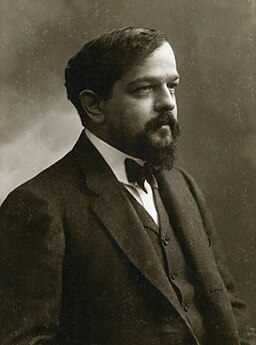
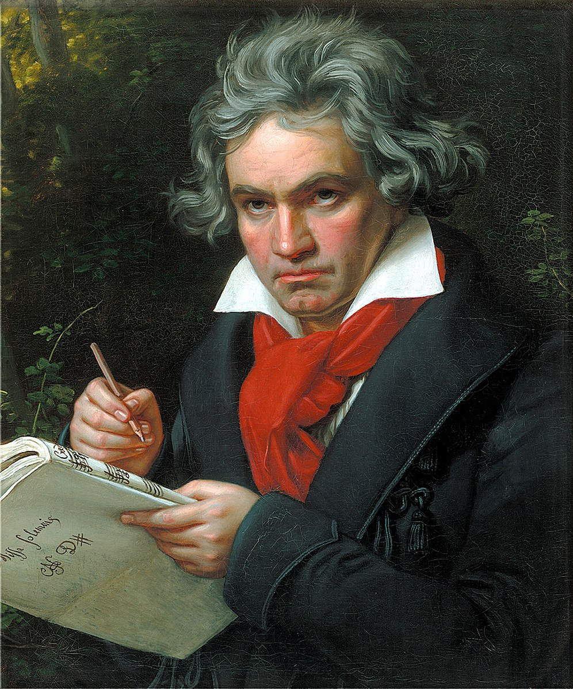

Favorite Composers
Below are a few of my favorite piano composers from various musical and time periods.
Claude Debussy
 Wikimedia CommonsFavorite pieces:
- Deux arabesques, L. 66
- Golliwog's Cakewalk (Children's Corner, L. 113)
Fun facts:
- Debussy is seen by some to be the first Impressionist composer, though he rejected the term.
- In 1983, pianist and scholar Roy Howat suggested that some of Debussy's pieces can by divided into sections that reflect that reflect the golden ratio.
Scott Joplin
 Wikimedia Commons
Wikimedia Commons
Favorite pieces:
- Maple Leaf Rag
- The Cascades
Fun facts:
- Joplin regarded ragtime as a form of classical music meant to be performed in concert halls and disdained the performance of ragtime as honky-tonk music.
- Joplin received most of his musical education from Julius Weiss, a German-born American Jewish music professor. Weiss, recognizing Joplin's talent and his family's financial difficulties, gave him piano lessons free of charge. In his later years, Joplin sent his former teacher "gifts of money when he was old and ill" until Weiss passed away.
Ludwig van Beethoven
 Wikimedia CommonsFavorite pieces:
- Piano Sonata No. 8 in C minor, Op. 13 "Pathetique" - III. Rondo: Allegro
- Piano Sonata No. 14 in C-sharp minor "Moonlight Sonata" - III. Presto agitato
Fun facts:
- At the age of five, Beethoven was taught by Tobias Friedrich Pfeiffer, an insomniac who often dragged young Beethoven from his bed to the keyboard for late-night lessons.
- Beethoven experienced significant hearing loss, but never became totally deaf.
Interesting Info
All information on composers is from Wikipedia. Wikipedia articles are linked to each composer's name above.